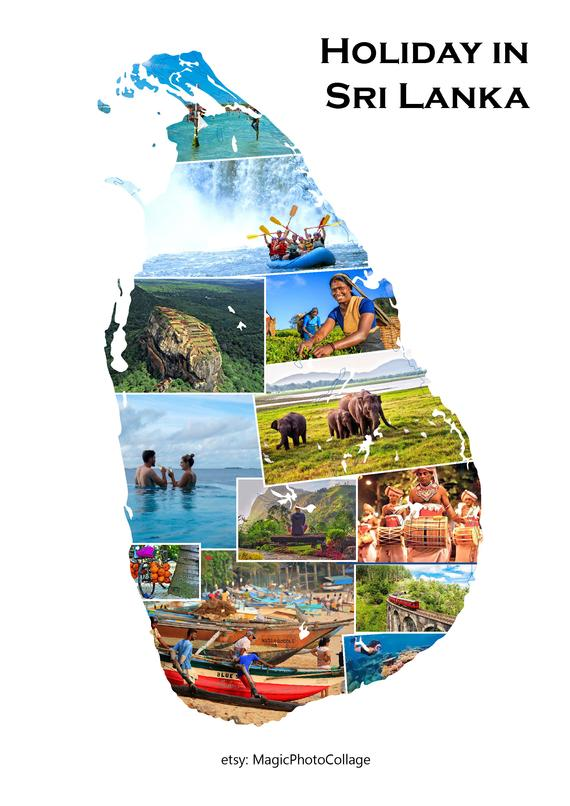
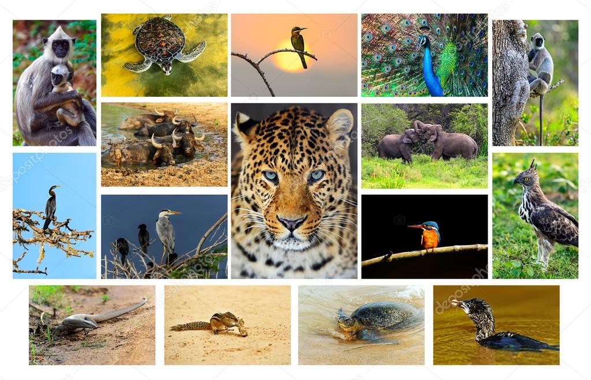
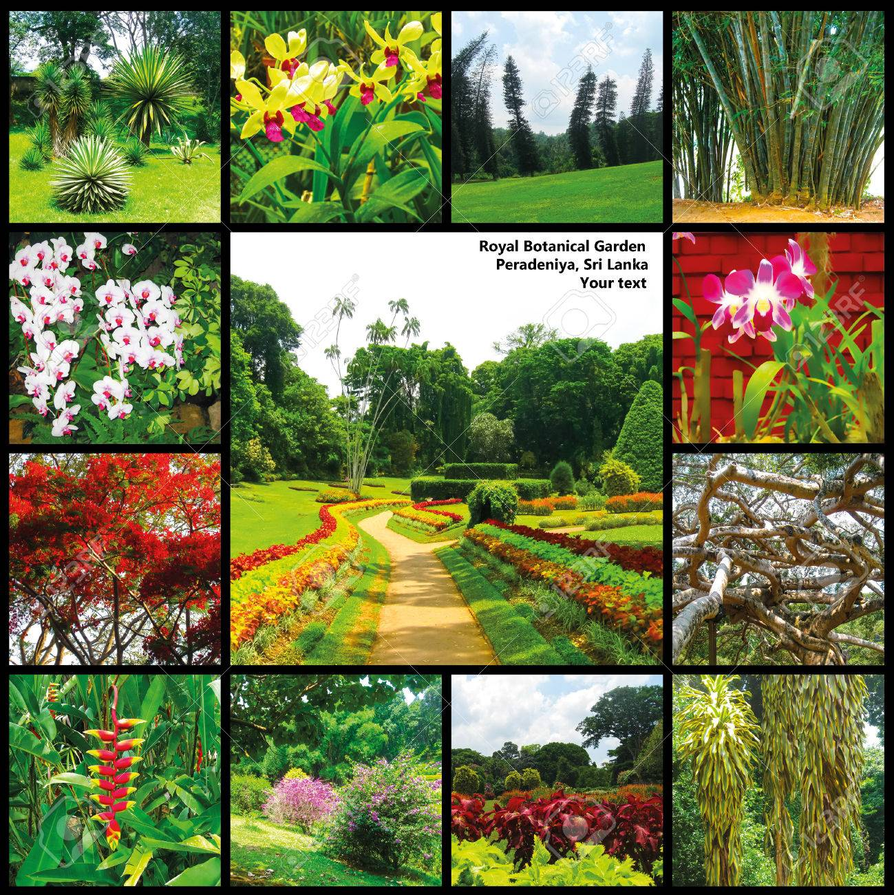
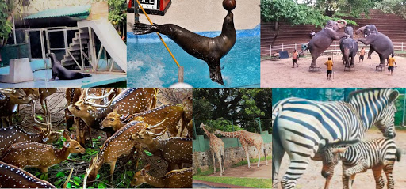

STORY OF DEHIWALA ZOO
- Established in the year 1936 Dehiwala Zoo is one if the oldest zoo's in Asia.
- It is also believed that the open zoo concept was introduced by this particular zoo which was further taken ahead by various others.
- Basically known as the Dehiwala Zoo, the real name of the zoo is the National Zoological Gardens of Sri Lanka.
ABOUT SRI LANKAN ANIMALS
- Sri Lanka is home to roughly 123 species of mammals, 41 of which are threatened (9 critically). 16 of the species are endemic, of which 14 are threatened, including the large sloth bear. mammalian orders), with 30 different species.
- Sri Lanka currently contains 183 species of reptiles, of which 60 are threatened and 113 are endemic. Most of the reptiles are snakes and the largest are two species of crocodile, the mugger crocodile and saltwater crocodile.
About Sri Lanka

- Sri lanka also know as "THE PEARL OF THE INDIAN OCEAN"
- Occupied with beautiful sea shore, Mountains, Vallies and many more
- Sri lanka hold many treasure such as the Wild Elephant and Jaguras
About Animals in Sri Lanka

- Sri lanka is home to approximatly 123 species of animals
- Some of them being the Asian Elephant and Lepord
- Sri Lanka is also home to 34 endemic birds species, Pecocks being the most popular among them
About Plants in Sri lanka

- Endemic plants in Sinharaja Forest Reserve there are about 217 endemic plants can be found in Sri Lanka.
- About 140 plant species are located in Sinharaja Forest Reserve.
- In forest canopy layer, endemic plants are belonging to following families
About Zoos in Sri Lanka

- The Dehiwala Zoo in Sri Lanka has 3000 animals as of 2005.
- Dehiwala Zoo houses 72 species of Mammals, 65 species of Birds, 31 species of Reptiles, 89 species of Fish, 03 families of Amphibians and 30 species of Butterflies etc.
- TO ANIMALS :
- To provide a safe space for rehabilitation and repopulation of animals
- TO PEOPLE :
- To give people the oppertunity to have a closer look at how animals live in their natural habitat